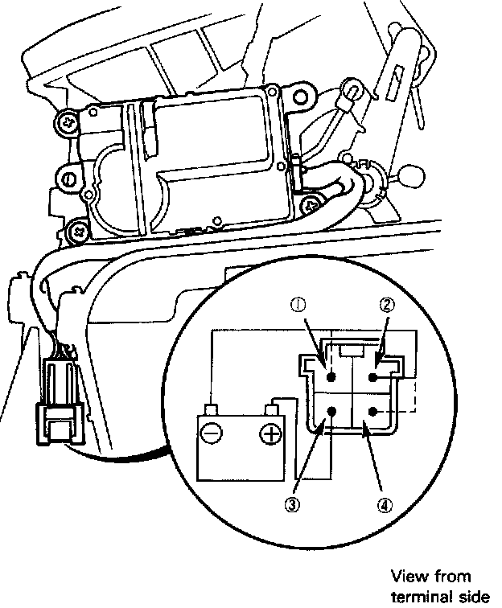

Recirculation Control Motor
Recirculation Control Motor
1. Connect the battery positive to the 3 terminal of the recirculation control motor connector and negative to 2 terminal.
2. Using a jumper wire connect the 2 terminal and 1 or 4 terminal.
- On the recirculation door REC position, the motor should turn with the 2 terminal connected to 1 terminal.
^ On the door FRESH position, the motor should turn with the 2 terminal connected to 4 terminal.
4. The motor automatically stops after half turn with the jumper wire connected.